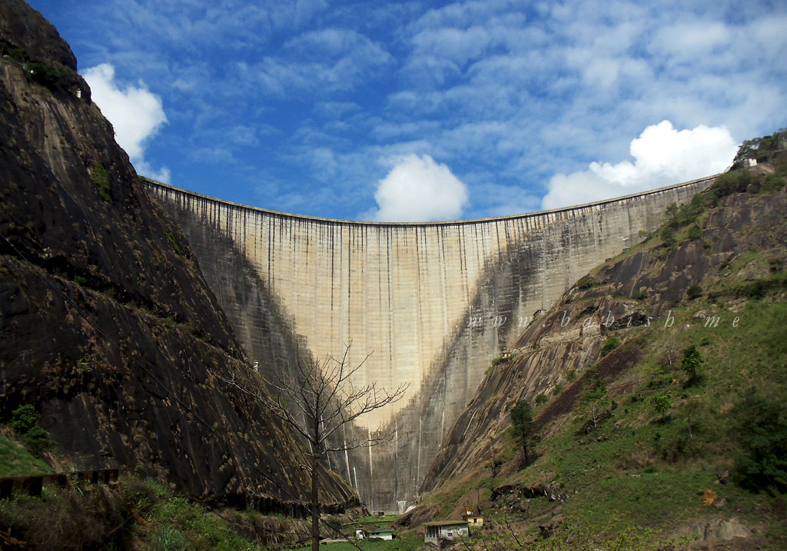

The Idukki Dam is a double curvature Arch dam constructed across the Periyar River in a narrow gorge between two granite hills locally known as Kuravan and Kurathi in Mariyapuram village in Idukki District in Kerala, India. At 168.91 metres (554.2 ft),it is one of the highest arch dams in Asia. It is constructed and owned by the Kerala State Electricity Board. It supports a 780 MW hydroelectric power station in Moolamattom, which started generating power on 4 October 1975.The dam type is a concrete, double curvature parabolic,thin arc dam.[3] The Indo-Canadian project was inaugurated by the Prime Minister Indira Gandhi on February 17,1976.
Meesapulimala is an Indian peak, the next south of the second highest peak (Manna Malai 2,659 metres (8,724 ft))of the Western Ghats on the Theni District, Tamil Nadu and Idukki District Kerala border. Its peak is 2,640 metres (8,661 ft) above sea level.The name derives from its appearance from the southwest of a tiger with prominent whiskers ("Moustache").It is located in between the Anaimalai Hills and Palani Hills near Suryanelli around 20 km away from Munnar.

Periyar National Park and Wildlife Sanctuary (PNP) is a protected area located in the districts of Idukki and Pathanamthitta in Kerala, India. It is notable as an elephant reserve and a tiger reserve. The protected area encompasses 925 km2 (357 sq mi), of which 305 km2 (118 sq mi) of the core zone was declared as the Periyar National Park in 1982. The park is a repository of rare, endemic, and endangered flora and fauna and forms the major watershed of two important rivers of Kerala: the Periyar and the Pamba.
Idukki Dam
Meesapulimala

Ramakkalmedu
Vandanmedu
Periyar National Park
Idukki Arch Dam

ILAVEEZHA POONCHIRA
Idukki Wildlife Sanctuary